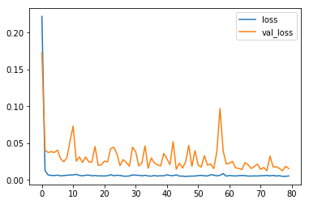

TF2 0 Stock Returns
================ by Jawad Haider
Stock Returns¶
# Install TensorFlow
# !pip install -q tensorflow-gpu==2.0.0-beta1
try:
%tensorflow_version 2.x # Colab only.
except Exception:
pass
import tensorflow as tf
print(tf.__version__)
2.0.0-beta1
# More imports
from tensorflow.keras.layers import Input, LSTM, GRU, SimpleRNN, Dense, GlobalMaxPool1D
from tensorflow.keras.models import Model
from tensorflow.keras.optimizers import SGD, Adam
import numpy as np
import pandas as pd
import matplotlib.pyplot as plt
from sklearn.preprocessing import StandardScaler
# yes, you can read dataframes from URLs!
df = pd.read_csv('https://raw.githubusercontent.com/lazyprogrammer/machine_learning_examples/master/tf2.0/sbux.csv')
| date | open | high | low | close | volume | Name | |
|---|---|---|---|---|---|---|---|
| 0 | 2013-02-08 | 27.920 | 28.325 | 27.920 | 28.185 | 7146296 | SBUX |
| 1 | 2013-02-11 | 28.260 | 28.260 | 27.930 | 28.070 | 5457354 | SBUX |
| 2 | 2013-02-12 | 28.000 | 28.275 | 27.975 | 28.130 | 8665592 | SBUX |
| 3 | 2013-02-13 | 28.230 | 28.230 | 27.750 | 27.915 | 7022056 | SBUX |
| 4 | 2013-02-14 | 27.765 | 27.905 | 27.675 | 27.775 | 8899188 | SBUX |
| date | open | high | low | close | volume | Name | |
|---|---|---|---|---|---|---|---|
| 1254 | 2018-02-01 | 56.280 | 56.42 | 55.89 | 56.00 | 14690146 | SBUX |
| 1255 | 2018-02-02 | 55.900 | 56.32 | 55.70 | 55.77 | 15358909 | SBUX |
| 1256 | 2018-02-05 | 55.530 | 56.26 | 54.57 | 54.69 | 16059955 | SBUX |
| 1257 | 2018-02-06 | 53.685 | 56.06 | 53.56 | 55.61 | 17415065 | SBUX |
| 1258 | 2018-02-07 | 55.080 | 55.43 | 54.44 | 54.46 | 13927022 | SBUX |
# Start by doing the WRONG thing - trying to predict the price itself
series = df['close'].values.reshape(-1, 1)
# Normalize the data
# Note: I didn't think about where the true boundary is, this is just approx.
scaler = StandardScaler()
scaler.fit(series[:len(series) // 2])
series = scaler.transform(series).flatten()
### build the dataset
# let's see if we can use T past values to predict the next value
T = 10
D = 1
X = []
Y = []
for t in range(len(series) - T):
x = series[t:t+T]
X.append(x)
y = series[t+T]
Y.append(y)
X = np.array(X).reshape(-1, T, 1) # Now the data should be N x T x D
Y = np.array(Y)
N = len(X)
print("X.shape", X.shape, "Y.shape", Y.shape)
X.shape (1249, 10, 1) Y.shape (1249,)
### try autoregressive RNN model
i = Input(shape=(T, 1))
x = LSTM(5)(i)
x = Dense(1)(x)
model = Model(i, x)
model.compile(
loss='mse',
optimizer=Adam(lr=0.1),
)
# train the RNN
r = model.fit(
X[:-N//2], Y[:-N//2],
epochs=80,
validation_data=(X[-N//2:], Y[-N//2:]),
)
Train on 624 samples, validate on 625 samples
Epoch 1/80
624/624 [==============================] - 2s 3ms/sample - loss: 0.2222 - val_loss: 0.1727
Epoch 2/80
624/624 [==============================] - 0s 223us/sample - loss: 0.0128 - val_loss: 0.0407
Epoch 3/80
624/624 [==============================] - 0s 210us/sample - loss: 0.0069 - val_loss: 0.0373
Epoch 4/80
624/624 [==============================] - 0s 213us/sample - loss: 0.0063 - val_loss: 0.0386
Epoch 5/80
624/624 [==============================] - 0s 234us/sample - loss: 0.0062 - val_loss: 0.0375
Epoch 6/80
624/624 [==============================] - 0s 214us/sample - loss: 0.0067 - val_loss: 0.0406
Epoch 7/80
624/624 [==============================] - 0s 217us/sample - loss: 0.0057 - val_loss: 0.0290
Epoch 8/80
624/624 [==============================] - 0s 220us/sample - loss: 0.0061 - val_loss: 0.0248
Epoch 9/80
624/624 [==============================] - 0s 223us/sample - loss: 0.0065 - val_loss: 0.0303
Epoch 10/80
624/624 [==============================] - 0s 211us/sample - loss: 0.0069 - val_loss: 0.0529
Epoch 11/80
624/624 [==============================] - 0s 210us/sample - loss: 0.0070 - val_loss: 0.0734
Epoch 12/80
624/624 [==============================] - 0s 209us/sample - loss: 0.0078 - val_loss: 0.0258
Epoch 13/80
624/624 [==============================] - 0s 232us/sample - loss: 0.0063 - val_loss: 0.0313
Epoch 14/80
624/624 [==============================] - 0s 213us/sample - loss: 0.0058 - val_loss: 0.0239
Epoch 15/80
624/624 [==============================] - 0s 218us/sample - loss: 0.0066 - val_loss: 0.0314
Epoch 16/80
624/624 [==============================] - 0s 208us/sample - loss: 0.0068 - val_loss: 0.0248
Epoch 17/80
624/624 [==============================] - 0s 208us/sample - loss: 0.0058 - val_loss: 0.0245
Epoch 18/80
624/624 [==============================] - 0s 209us/sample - loss: 0.0062 - val_loss: 0.0457
Epoch 19/80
624/624 [==============================] - 0s 208us/sample - loss: 0.0056 - val_loss: 0.0200
Epoch 20/80
624/624 [==============================] - 0s 242us/sample - loss: 0.0057 - val_loss: 0.0207
Epoch 21/80
624/624 [==============================] - 0s 207us/sample - loss: 0.0056 - val_loss: 0.0258
Epoch 22/80
624/624 [==============================] - 0s 218us/sample - loss: 0.0059 - val_loss: 0.0244
Epoch 23/80
624/624 [==============================] - 0s 205us/sample - loss: 0.0073 - val_loss: 0.0426
Epoch 24/80
624/624 [==============================] - 0s 205us/sample - loss: 0.0059 - val_loss: 0.0446
Epoch 25/80
624/624 [==============================] - 0s 209us/sample - loss: 0.0065 - val_loss: 0.0359
Epoch 26/80
624/624 [==============================] - 0s 216us/sample - loss: 0.0064 - val_loss: 0.0198
Epoch 27/80
624/624 [==============================] - 0s 213us/sample - loss: 0.0054 - val_loss: 0.0279
Epoch 28/80
624/624 [==============================] - 0s 225us/sample - loss: 0.0053 - val_loss: 0.0239
Epoch 29/80
624/624 [==============================] - 0s 207us/sample - loss: 0.0056 - val_loss: 0.0189
Epoch 30/80
624/624 [==============================] - 0s 208us/sample - loss: 0.0070 - val_loss: 0.0445
Epoch 31/80
624/624 [==============================] - 0s 215us/sample - loss: 0.0066 - val_loss: 0.0388
Epoch 32/80
624/624 [==============================] - 0s 211us/sample - loss: 0.0065 - val_loss: 0.0193
Epoch 33/80
624/624 [==============================] - 0s 208us/sample - loss: 0.0058 - val_loss: 0.0234
Epoch 34/80
624/624 [==============================] - 0s 210us/sample - loss: 0.0066 - val_loss: 0.0463
Epoch 35/80
624/624 [==============================] - 0s 204us/sample - loss: 0.0056 - val_loss: 0.0161
Epoch 36/80
624/624 [==============================] - 0s 229us/sample - loss: 0.0054 - val_loss: 0.0300
Epoch 37/80
624/624 [==============================] - 0s 217us/sample - loss: 0.0062 - val_loss: 0.0232
Epoch 38/80
624/624 [==============================] - 0s 212us/sample - loss: 0.0055 - val_loss: 0.0207
Epoch 39/80
624/624 [==============================] - 0s 213us/sample - loss: 0.0060 - val_loss: 0.0193
Epoch 40/80
624/624 [==============================] - 0s 217us/sample - loss: 0.0058 - val_loss: 0.0362
Epoch 41/80
624/624 [==============================] - 0s 210us/sample - loss: 0.0072 - val_loss: 0.0290
Epoch 42/80
624/624 [==============================] - 0s 210us/sample - loss: 0.0061 - val_loss: 0.0209
Epoch 43/80
624/624 [==============================] - 0s 227us/sample - loss: 0.0060 - val_loss: 0.0521
Epoch 44/80
624/624 [==============================] - 0s 210us/sample - loss: 0.0071 - val_loss: 0.0147
Epoch 45/80
624/624 [==============================] - 0s 218us/sample - loss: 0.0054 - val_loss: 0.0229
Epoch 46/80
624/624 [==============================] - 0s 220us/sample - loss: 0.0054 - val_loss: 0.0163
Epoch 47/80
624/624 [==============================] - 0s 216us/sample - loss: 0.0050 - val_loss: 0.0249
Epoch 48/80
624/624 [==============================] - 0s 206us/sample - loss: 0.0053 - val_loss: 0.0471
Epoch 49/80
624/624 [==============================] - 0s 203us/sample - loss: 0.0054 - val_loss: 0.0186
Epoch 50/80
624/624 [==============================] - 0s 212us/sample - loss: 0.0055 - val_loss: 0.0399
Epoch 51/80
624/624 [==============================] - 0s 228us/sample - loss: 0.0061 - val_loss: 0.0203
Epoch 52/80
624/624 [==============================] - 0s 211us/sample - loss: 0.0064 - val_loss: 0.0176
Epoch 53/80
624/624 [==============================] - 0s 210us/sample - loss: 0.0058 - val_loss: 0.0332
Epoch 54/80
624/624 [==============================] - 0s 217us/sample - loss: 0.0056 - val_loss: 0.0202
Epoch 55/80
624/624 [==============================] - 0s 209us/sample - loss: 0.0073 - val_loss: 0.0219
Epoch 56/80
624/624 [==============================] - 0s 220us/sample - loss: 0.0068 - val_loss: 0.0156
Epoch 57/80
624/624 [==============================] - 0s 212us/sample - loss: 0.0058 - val_loss: 0.0389
Epoch 58/80
624/624 [==============================] - 0s 227us/sample - loss: 0.0064 - val_loss: 0.0973
Epoch 59/80
624/624 [==============================] - 0s 203us/sample - loss: 0.0089 - val_loss: 0.0399
Epoch 60/80
624/624 [==============================] - 0s 220us/sample - loss: 0.0053 - val_loss: 0.0218
Epoch 61/80
624/624 [==============================] - 0s 214us/sample - loss: 0.0062 - val_loss: 0.0229
Epoch 62/80
624/624 [==============================] - 0s 223us/sample - loss: 0.0058 - val_loss: 0.0254
Epoch 63/80
624/624 [==============================] - 0s 241us/sample - loss: 0.0055 - val_loss: 0.0165
Epoch 64/80
624/624 [==============================] - 0s 216us/sample - loss: 0.0060 - val_loss: 0.0158
Epoch 65/80
624/624 [==============================] - 0s 213us/sample - loss: 0.0063 - val_loss: 0.0142
Epoch 66/80
624/624 [==============================] - 0s 230us/sample - loss: 0.0060 - val_loss: 0.0237
Epoch 67/80
624/624 [==============================] - 0s 217us/sample - loss: 0.0054 - val_loss: 0.0207
Epoch 68/80
624/624 [==============================] - 0s 218us/sample - loss: 0.0055 - val_loss: 0.0157
Epoch 69/80
624/624 [==============================] - 0s 217us/sample - loss: 0.0056 - val_loss: 0.0188
Epoch 70/80
624/624 [==============================] - 0s 206us/sample - loss: 0.0055 - val_loss: 0.0216
Epoch 71/80
624/624 [==============================] - 0s 212us/sample - loss: 0.0059 - val_loss: 0.0145
Epoch 72/80
624/624 [==============================] - 0s 213us/sample - loss: 0.0060 - val_loss: 0.0172
Epoch 73/80
624/624 [==============================] - 0s 218us/sample - loss: 0.0063 - val_loss: 0.0127
Epoch 74/80
624/624 [==============================] - 0s 212us/sample - loss: 0.0057 - val_loss: 0.0326
Epoch 75/80
624/624 [==============================] - 0s 223us/sample - loss: 0.0064 - val_loss: 0.0178
Epoch 76/80
624/624 [==============================] - 0s 209us/sample - loss: 0.0056 - val_loss: 0.0182
Epoch 77/80
624/624 [==============================] - 0s 209us/sample - loss: 0.0059 - val_loss: 0.0158
Epoch 78/80
624/624 [==============================] - 0s 219us/sample - loss: 0.0051 - val_loss: 0.0126
Epoch 79/80
624/624 [==============================] - 0s 204us/sample - loss: 0.0051 - val_loss: 0.0187
Epoch 80/80
624/624 [==============================] - 0s 208us/sample - loss: 0.0056 - val_loss: 0.0157
# Plot loss per iteration
import matplotlib.pyplot as plt
plt.plot(r.history['loss'], label='loss')
plt.plot(r.history['val_loss'], label='val_loss')
plt.legend()
<matplotlib.legend.Legend at 0x7f726fa0ca90>

# One-step forecast using true targets
outputs = model.predict(X)
print(outputs.shape)
predictions = outputs[:,0]
plt.plot(Y, label='targets')
plt.plot(predictions, label='predictions')
plt.legend()
plt.show()
(1249, 1)

# Multi-step forecast
validation_target = Y[-N//2:]
validation_predictions = []
# first validation input
last_x = X[-N//2] # 1-D array of length T
while len(validation_predictions) < len(validation_target):
p = model.predict(last_x.reshape(1, T, 1))[0,0] # 1x1 array -> scalar
# update the predictions list
validation_predictions.append(p)
# make the new input
last_x = np.roll(last_x, -1)
last_x[-1] = p
plt.plot(validation_target, label='forecast target')
plt.plot(validation_predictions, label='forecast prediction')
plt.legend()
<matplotlib.legend.Legend at 0x7f726987fba8>

# calculate returns by first shifting the data
df['PrevClose'] = df['close'].shift(1) # move everything up 1
# so now it's like
# close / prev close
# x[2] x[1]
# x[3] x[2]
# x[4] x[3]
# ...
# x[t] x[t-1]
| date | open | high | low | close | volume | Name | PrevClose | |
|---|---|---|---|---|---|---|---|---|
| 0 | 2013-02-08 | 27.920 | 28.325 | 27.920 | 28.185 | 7146296 | SBUX | NaN |
| 1 | 2013-02-11 | 28.260 | 28.260 | 27.930 | 28.070 | 5457354 | SBUX | 28.185 |
| 2 | 2013-02-12 | 28.000 | 28.275 | 27.975 | 28.130 | 8665592 | SBUX | 28.070 |
| 3 | 2013-02-13 | 28.230 | 28.230 | 27.750 | 27.915 | 7022056 | SBUX | 28.130 |
| 4 | 2013-02-14 | 27.765 | 27.905 | 27.675 | 27.775 | 8899188 | SBUX | 27.915 |
# then the return is
# (x[t] - x[t-1]) / x[t-1]
df['Return'] = (df['close'] - df['PrevClose']) / df['PrevClose']
| date | open | high | low | close | volume | Name | PrevClose | Return | |
|---|---|---|---|---|---|---|---|---|---|
| 0 | 2013-02-08 | 27.920 | 28.325 | 27.920 | 28.185 | 7146296 | SBUX | NaN | NaN |
| 1 | 2013-02-11 | 28.260 | 28.260 | 27.930 | 28.070 | 5457354 | SBUX | 28.185 | -0.004080 |
| 2 | 2013-02-12 | 28.000 | 28.275 | 27.975 | 28.130 | 8665592 | SBUX | 28.070 | 0.002138 |
| 3 | 2013-02-13 | 28.230 | 28.230 | 27.750 | 27.915 | 7022056 | SBUX | 28.130 | -0.007643 |
| 4 | 2013-02-14 | 27.765 | 27.905 | 27.675 | 27.775 | 8899188 | SBUX | 27.915 | -0.005015 |
<matplotlib.axes._subplots.AxesSubplot at 0x7f726f9a3518>
series = df['Return'].values[1:].reshape(-1, 1)
# Normalize the data
# Note: I didn't think about where the true boundary is, this is just approx.
scaler = StandardScaler()
scaler.fit(series[:len(series) // 2])
series = scaler.transform(series).flatten()
### build the dataset
# let's see if we can use T past values to predict the next value
T = 10
D = 1
X = []
Y = []
for t in range(len(series) - T):
x = series[t:t+T]
X.append(x)
y = series[t+T]
Y.append(y)
X = np.array(X).reshape(-1, T, 1) # Now the data should be N x T x D
Y = np.array(Y)
N = len(X)
print("X.shape", X.shape, "Y.shape", Y.shape)
X.shape (1248, 10, 1) Y.shape (1248,)
### try autoregressive RNN model
i = Input(shape=(T, 1))
x = LSTM(5)(i)
x = Dense(1)(x)
model = Model(i, x)
model.compile(
loss='mse',
optimizer=Adam(lr=0.01),
)
# train the RNN
r = model.fit(
X[:-N//2], Y[:-N//2],
epochs=80,
validation_data=(X[-N//2:], Y[-N//2:]),
)
Train on 624 samples, validate on 624 samples
Epoch 1/80
624/624 [==============================] - 1s 1ms/sample - loss: 0.9940 - val_loss: 1.1571
Epoch 2/80
624/624 [==============================] - 0s 214us/sample - loss: 0.9866 - val_loss: 1.1597
Epoch 3/80
624/624 [==============================] - 0s 214us/sample - loss: 0.9829 - val_loss: 1.1493
Epoch 4/80
624/624 [==============================] - 0s 209us/sample - loss: 0.9836 - val_loss: 1.1523
Epoch 5/80
624/624 [==============================] - 0s 216us/sample - loss: 0.9877 - val_loss: 1.1510
Epoch 6/80
624/624 [==============================] - 0s 216us/sample - loss: 0.9838 - val_loss: 1.1552
Epoch 7/80
624/624 [==============================] - 0s 211us/sample - loss: 0.9853 - val_loss: 1.1602
Epoch 8/80
624/624 [==============================] - 0s 222us/sample - loss: 0.9822 - val_loss: 1.1499
Epoch 9/80
624/624 [==============================] - 0s 215us/sample - loss: 0.9857 - val_loss: 1.1637
Epoch 10/80
624/624 [==============================] - 0s 213us/sample - loss: 0.9815 - val_loss: 1.1354
Epoch 11/80
624/624 [==============================] - 0s 212us/sample - loss: 0.9894 - val_loss: 1.1632
Epoch 12/80
624/624 [==============================] - 0s 213us/sample - loss: 0.9768 - val_loss: 1.1462
Epoch 13/80
624/624 [==============================] - 0s 209us/sample - loss: 0.9813 - val_loss: 1.1539
Epoch 14/80
624/624 [==============================] - 0s 205us/sample - loss: 0.9802 - val_loss: 1.1491
Epoch 15/80
624/624 [==============================] - 0s 222us/sample - loss: 0.9745 - val_loss: 1.1466
Epoch 16/80
624/624 [==============================] - 0s 226us/sample - loss: 0.9766 - val_loss: 1.1588
Epoch 17/80
624/624 [==============================] - 0s 220us/sample - loss: 0.9651 - val_loss: 1.1595
Epoch 18/80
624/624 [==============================] - 0s 207us/sample - loss: 0.9571 - val_loss: 1.1705
Epoch 19/80
624/624 [==============================] - 0s 207us/sample - loss: 0.9463 - val_loss: 1.1902
Epoch 20/80
624/624 [==============================] - 0s 242us/sample - loss: 0.9363 - val_loss: 1.1664
Epoch 21/80
624/624 [==============================] - 0s 209us/sample - loss: 0.9419 - val_loss: 1.1877
Epoch 22/80
624/624 [==============================] - 0s 216us/sample - loss: 0.9314 - val_loss: 1.2258
Epoch 23/80
624/624 [==============================] - 0s 231us/sample - loss: 0.9192 - val_loss: 1.1998
Epoch 24/80
624/624 [==============================] - 0s 206us/sample - loss: 0.9266 - val_loss: 1.2173
Epoch 25/80
624/624 [==============================] - 0s 210us/sample - loss: 0.9174 - val_loss: 1.2386
Epoch 26/80
624/624 [==============================] - 0s 213us/sample - loss: 0.9116 - val_loss: 1.2249
Epoch 27/80
624/624 [==============================] - 0s 215us/sample - loss: 0.9065 - val_loss: 1.2387
Epoch 28/80
624/624 [==============================] - 0s 223us/sample - loss: 0.9102 - val_loss: 1.2492
Epoch 29/80
624/624 [==============================] - 0s 213us/sample - loss: 0.9022 - val_loss: 1.2742
Epoch 30/80
624/624 [==============================] - 0s 211us/sample - loss: 0.8919 - val_loss: 1.2505
Epoch 31/80
624/624 [==============================] - 0s 241us/sample - loss: 0.8865 - val_loss: 1.2967
Epoch 32/80
624/624 [==============================] - 0s 212us/sample - loss: 0.9019 - val_loss: 1.2916
Epoch 33/80
624/624 [==============================] - 0s 217us/sample - loss: 0.8976 - val_loss: 1.2559
Epoch 34/80
624/624 [==============================] - 0s 227us/sample - loss: 0.8814 - val_loss: 1.2702
Epoch 35/80
624/624 [==============================] - 0s 224us/sample - loss: 0.8668 - val_loss: 1.3312
Epoch 36/80
624/624 [==============================] - 0s 212us/sample - loss: 0.8769 - val_loss: 1.2489
Epoch 37/80
624/624 [==============================] - 0s 217us/sample - loss: 0.8774 - val_loss: 1.3559
Epoch 38/80
624/624 [==============================] - 0s 240us/sample - loss: 0.8659 - val_loss: 1.3003
Epoch 39/80
624/624 [==============================] - 0s 219us/sample - loss: 0.8513 - val_loss: 1.3741
Epoch 40/80
624/624 [==============================] - 0s 210us/sample - loss: 0.8468 - val_loss: 1.3747
Epoch 41/80
624/624 [==============================] - 0s 224us/sample - loss: 0.8590 - val_loss: 1.3489
Epoch 42/80
624/624 [==============================] - 0s 211us/sample - loss: 0.8395 - val_loss: 1.3724
Epoch 43/80
624/624 [==============================] - 0s 210us/sample - loss: 0.8469 - val_loss: 1.4338
Epoch 44/80
624/624 [==============================] - 0s 211us/sample - loss: 0.8469 - val_loss: 1.4760
Epoch 45/80
624/624 [==============================] - 0s 225us/sample - loss: 0.8629 - val_loss: 1.3005
Epoch 46/80
624/624 [==============================] - 0s 221us/sample - loss: 0.8444 - val_loss: 1.3844
Epoch 47/80
624/624 [==============================] - 0s 215us/sample - loss: 0.8402 - val_loss: 1.3652
Epoch 48/80
624/624 [==============================] - 0s 213us/sample - loss: 0.8166 - val_loss: 1.4462
Epoch 49/80
624/624 [==============================] - 0s 206us/sample - loss: 0.8166 - val_loss: 1.4201
Epoch 50/80
624/624 [==============================] - 0s 215us/sample - loss: 0.8072 - val_loss: 1.4665
Epoch 51/80
624/624 [==============================] - 0s 215us/sample - loss: 0.8032 - val_loss: 1.4918
Epoch 52/80
624/624 [==============================] - 0s 214us/sample - loss: 0.7988 - val_loss: 1.5627
Epoch 53/80
624/624 [==============================] - 0s 224us/sample - loss: 0.7954 - val_loss: 1.5068
Epoch 54/80
624/624 [==============================] - 0s 211us/sample - loss: 0.7866 - val_loss: 1.5371
Epoch 55/80
624/624 [==============================] - 0s 221us/sample - loss: 0.7843 - val_loss: 1.4661
Epoch 56/80
624/624 [==============================] - 0s 228us/sample - loss: 0.7888 - val_loss: 1.6810
Epoch 57/80
624/624 [==============================] - 0s 213us/sample - loss: 0.8047 - val_loss: 1.5455
Epoch 58/80
624/624 [==============================] - 0s 220us/sample - loss: 0.7924 - val_loss: 1.5155
Epoch 59/80
624/624 [==============================] - 0s 217us/sample - loss: 0.7815 - val_loss: 1.4651
Epoch 60/80
624/624 [==============================] - 0s 209us/sample - loss: 0.7777 - val_loss: 1.4777
Epoch 61/80
624/624 [==============================] - 0s 224us/sample - loss: 0.7991 - val_loss: 1.3920
Epoch 62/80
624/624 [==============================] - 0s 219us/sample - loss: 0.7914 - val_loss: 1.4990
Epoch 63/80
624/624 [==============================] - 0s 213us/sample - loss: 0.7683 - val_loss: 1.4576
Epoch 64/80
624/624 [==============================] - 0s 215us/sample - loss: 0.7609 - val_loss: 1.5357
Epoch 65/80
624/624 [==============================] - 0s 211us/sample - loss: 0.7529 - val_loss: 1.5212
Epoch 66/80
624/624 [==============================] - 0s 213us/sample - loss: 0.7500 - val_loss: 1.5611
Epoch 67/80
624/624 [==============================] - 0s 214us/sample - loss: 0.7521 - val_loss: 1.5443
Epoch 68/80
624/624 [==============================] - 0s 239us/sample - loss: 0.7456 - val_loss: 1.6059
Epoch 69/80
624/624 [==============================] - 0s 222us/sample - loss: 0.7481 - val_loss: 1.5969
Epoch 70/80
624/624 [==============================] - 0s 209us/sample - loss: 0.7860 - val_loss: 1.6076
Epoch 71/80
624/624 [==============================] - 0s 213us/sample - loss: 0.8211 - val_loss: 1.3821
Epoch 72/80
624/624 [==============================] - 0s 207us/sample - loss: 0.8178 - val_loss: 1.5862
Epoch 73/80
624/624 [==============================] - 0s 214us/sample - loss: 0.7538 - val_loss: 1.5646
Epoch 74/80
624/624 [==============================] - 0s 222us/sample - loss: 0.7356 - val_loss: 1.6355
Epoch 75/80
624/624 [==============================] - 0s 215us/sample - loss: 0.7513 - val_loss: 1.4834
Epoch 76/80
624/624 [==============================] - 0s 232us/sample - loss: 0.7505 - val_loss: 1.5441
Epoch 77/80
624/624 [==============================] - 0s 213us/sample - loss: 0.7432 - val_loss: 1.5286
Epoch 78/80
624/624 [==============================] - 0s 203us/sample - loss: 0.7276 - val_loss: 1.5084
Epoch 79/80
624/624 [==============================] - 0s 209us/sample - loss: 0.7282 - val_loss: 1.6215
Epoch 80/80
624/624 [==============================] - 0s 215us/sample - loss: 0.7342 - val_loss: 1.5306
# Plot loss per iteration
import matplotlib.pyplot as plt
plt.plot(r.history['loss'], label='loss')
plt.plot(r.history['val_loss'], label='val_loss')
plt.legend()
<matplotlib.legend.Legend at 0x7f7267aa46d8>

# One-step forecast using true targets
outputs = model.predict(X)
print(outputs.shape)
predictions = outputs[:,0]
plt.plot(Y, label='targets')
plt.plot(predictions, label='predictions')
plt.legend()
plt.show()
(1248, 1)
# Multi-step forecast
validation_target = Y[-N//2:]
validation_predictions = []
# first validation input
last_x = X[-N//2] # 1-D array of length T
while len(validation_predictions) < len(validation_target):
p = model.predict(last_x.reshape(1, T, 1))[0,0] # 1x1 array -> scalar
# update the predictions list
validation_predictions.append(p)
# make the new input
last_x = np.roll(last_x, -1)
last_x[-1] = p
plt.plot(validation_target, label='forecast target')
plt.plot(validation_predictions, label='forecast prediction')
plt.legend()
<matplotlib.legend.Legend at 0x7f726fab4e10>

# Now turn the full data into numpy arrays
# Not yet in the final "X" format!
input_data = df[['open', 'high', 'low', 'close', 'volume']].values
targets = df['Return'].values
# Now make the actual data which will go into the neural network
T = 10 # the number of time steps to look at to make a prediction for the next day
D = input_data.shape[1]
N = len(input_data) - T # (e.g. if T=10 and you have 11 data points then you'd only have 1 sample)
# normalize the inputs
Ntrain = len(input_data) * 2 // 3
scaler = StandardScaler()
scaler.fit(input_data[:Ntrain + T - 1])
input_data = scaler.transform(input_data)
# Setup X_train and Y_train
X_train = np.zeros((Ntrain, T, D))
Y_train = np.zeros(Ntrain)
for t in range(Ntrain):
X_train[t, :, :] = input_data[t:t+T]
Y_train[t] = (targets[t+T] > 0)
# Setup X_test and Y_test
X_test = np.zeros((N - Ntrain, T, D))
Y_test = np.zeros(N - Ntrain)
for u in range(N - Ntrain):
# u counts from 0...(N - Ntrain)
# t counts from Ntrain...N
t = u + Ntrain
X_test[u, :, :] = input_data[t:t+T]
Y_test[u] = (targets[t+T] > 0)
# make the RNN
i = Input(shape=(T, D))
x = LSTM(50)(i)
x = Dense(1, activation='sigmoid')(x)
model = Model(i, x)
model.compile(
loss='binary_crossentropy',
optimizer=Adam(lr=0.001),
metrics=['accuracy'],
)
# train the RNN
r = model.fit(
X_train, Y_train,
batch_size=32,
epochs=300,
validation_data=(X_test, Y_test),
)
WARNING: Logging before flag parsing goes to stderr.
W0803 17:30:48.500098 140132640524160 deprecation.py:323] From /usr/local/lib/python3.6/dist-packages/tensorflow/python/ops/math_grad.py:1250: add_dispatch_support.<locals>.wrapper (from tensorflow.python.ops.array_ops) is deprecated and will be removed in a future version.
Instructions for updating:
Use tf.where in 2.0, which has the same broadcast rule as np.where
Train on 839 samples, validate on 410 samples
Epoch 1/300
839/839 [==============================] - 1s 2ms/sample - loss: 0.6995 - accuracy: 0.4923 - val_loss: 0.6965 - val_accuracy: 0.4732
Epoch 2/300
839/839 [==============================] - 0s 232us/sample - loss: 0.6937 - accuracy: 0.5221 - val_loss: 0.6970 - val_accuracy: 0.4805
Epoch 3/300
839/839 [==============================] - 0s 225us/sample - loss: 0.6925 - accuracy: 0.5185 - val_loss: 0.6938 - val_accuracy: 0.4951
Epoch 4/300
839/839 [==============================] - 0s 225us/sample - loss: 0.6914 - accuracy: 0.5125 - val_loss: 0.6922 - val_accuracy: 0.5220
Epoch 5/300
839/839 [==============================] - 0s 228us/sample - loss: 0.6915 - accuracy: 0.5280 - val_loss: 0.6944 - val_accuracy: 0.4927
Epoch 6/300
839/839 [==============================] - 0s 246us/sample - loss: 0.6920 - accuracy: 0.5185 - val_loss: 0.6923 - val_accuracy: 0.4927
Epoch 7/300
839/839 [==============================] - 0s 228us/sample - loss: 0.6929 - accuracy: 0.5352 - val_loss: 0.7042 - val_accuracy: 0.4854
Epoch 8/300
839/839 [==============================] - 0s 229us/sample - loss: 0.6918 - accuracy: 0.5435 - val_loss: 0.6933 - val_accuracy: 0.5000
Epoch 9/300
839/839 [==============================] - 0s 227us/sample - loss: 0.6900 - accuracy: 0.5280 - val_loss: 0.6942 - val_accuracy: 0.5024
Epoch 10/300
839/839 [==============================] - 0s 232us/sample - loss: 0.6905 - accuracy: 0.5185 - val_loss: 0.6937 - val_accuracy: 0.5000
Epoch 11/300
839/839 [==============================] - 0s 237us/sample - loss: 0.6892 - accuracy: 0.5209 - val_loss: 0.6926 - val_accuracy: 0.4902
Epoch 12/300
839/839 [==============================] - 0s 224us/sample - loss: 0.6897 - accuracy: 0.5364 - val_loss: 0.6930 - val_accuracy: 0.4878
Epoch 13/300
839/839 [==============================] - 0s 233us/sample - loss: 0.6888 - accuracy: 0.5352 - val_loss: 0.6965 - val_accuracy: 0.5024
Epoch 14/300
839/839 [==============================] - 0s 237us/sample - loss: 0.6878 - accuracy: 0.5411 - val_loss: 0.6956 - val_accuracy: 0.4976
Epoch 15/300
839/839 [==============================] - 0s 227us/sample - loss: 0.6883 - accuracy: 0.5399 - val_loss: 0.6949 - val_accuracy: 0.4878
Epoch 16/300
839/839 [==============================] - 0s 240us/sample - loss: 0.6882 - accuracy: 0.5447 - val_loss: 0.6910 - val_accuracy: 0.5195
Epoch 17/300
839/839 [==============================] - 0s 227us/sample - loss: 0.6861 - accuracy: 0.5650 - val_loss: 0.6932 - val_accuracy: 0.4976
Epoch 18/300
839/839 [==============================] - 0s 232us/sample - loss: 0.6869 - accuracy: 0.5626 - val_loss: 0.6933 - val_accuracy: 0.4878
Epoch 19/300
839/839 [==============================] - 0s 226us/sample - loss: 0.6861 - accuracy: 0.5578 - val_loss: 0.6946 - val_accuracy: 0.4878
Epoch 20/300
839/839 [==============================] - 0s 232us/sample - loss: 0.6860 - accuracy: 0.5662 - val_loss: 0.6928 - val_accuracy: 0.5171
Epoch 21/300
839/839 [==============================] - 0s 223us/sample - loss: 0.6867 - accuracy: 0.5244 - val_loss: 0.6930 - val_accuracy: 0.5171
Epoch 22/300
839/839 [==============================] - 0s 245us/sample - loss: 0.6864 - accuracy: 0.5530 - val_loss: 0.6916 - val_accuracy: 0.5195
Epoch 23/300
839/839 [==============================] - 0s 231us/sample - loss: 0.6866 - accuracy: 0.5352 - val_loss: 0.6941 - val_accuracy: 0.4927
Epoch 24/300
839/839 [==============================] - 0s 229us/sample - loss: 0.6856 - accuracy: 0.5721 - val_loss: 0.6930 - val_accuracy: 0.5220
Epoch 25/300
839/839 [==============================] - 0s 230us/sample - loss: 0.6857 - accuracy: 0.5387 - val_loss: 0.6930 - val_accuracy: 0.5220
Epoch 26/300
839/839 [==============================] - 0s 232us/sample - loss: 0.6878 - accuracy: 0.5602 - val_loss: 0.6960 - val_accuracy: 0.4927
Epoch 27/300
839/839 [==============================] - 0s 256us/sample - loss: 0.6875 - accuracy: 0.5328 - val_loss: 0.6939 - val_accuracy: 0.4854
Epoch 28/300
839/839 [==============================] - 0s 230us/sample - loss: 0.6857 - accuracy: 0.5518 - val_loss: 0.6920 - val_accuracy: 0.5220
Epoch 29/300
839/839 [==============================] - 0s 226us/sample - loss: 0.6857 - accuracy: 0.5495 - val_loss: 0.6931 - val_accuracy: 0.5098
Epoch 30/300
839/839 [==============================] - 0s 231us/sample - loss: 0.6834 - accuracy: 0.5602 - val_loss: 0.6951 - val_accuracy: 0.5098
Epoch 31/300
839/839 [==============================] - 0s 229us/sample - loss: 0.6825 - accuracy: 0.5638 - val_loss: 0.6936 - val_accuracy: 0.5146
Epoch 32/300
839/839 [==============================] - 0s 244us/sample - loss: 0.6828 - accuracy: 0.5745 - val_loss: 0.6937 - val_accuracy: 0.5171
Epoch 33/300
839/839 [==============================] - 0s 228us/sample - loss: 0.6822 - accuracy: 0.5721 - val_loss: 0.6941 - val_accuracy: 0.5146
Epoch 34/300
839/839 [==============================] - 0s 225us/sample - loss: 0.6829 - accuracy: 0.5685 - val_loss: 0.6959 - val_accuracy: 0.5122
Epoch 35/300
839/839 [==============================] - 0s 226us/sample - loss: 0.6818 - accuracy: 0.5638 - val_loss: 0.6941 - val_accuracy: 0.5171
Epoch 36/300
839/839 [==============================] - 0s 263us/sample - loss: 0.6816 - accuracy: 0.5733 - val_loss: 0.6930 - val_accuracy: 0.5195
Epoch 37/300
839/839 [==============================] - 0s 241us/sample - loss: 0.6817 - accuracy: 0.5650 - val_loss: 0.6951 - val_accuracy: 0.5220
Epoch 38/300
839/839 [==============================] - 0s 225us/sample - loss: 0.6816 - accuracy: 0.5507 - val_loss: 0.6927 - val_accuracy: 0.5341
Epoch 39/300
839/839 [==============================] - 0s 235us/sample - loss: 0.6803 - accuracy: 0.5793 - val_loss: 0.6947 - val_accuracy: 0.5122
Epoch 40/300
839/839 [==============================] - 0s 228us/sample - loss: 0.6795 - accuracy: 0.5626 - val_loss: 0.6942 - val_accuracy: 0.5268
Epoch 41/300
839/839 [==============================] - 0s 224us/sample - loss: 0.6792 - accuracy: 0.5626 - val_loss: 0.6946 - val_accuracy: 0.5220
Epoch 42/300
839/839 [==============================] - 0s 246us/sample - loss: 0.6796 - accuracy: 0.5745 - val_loss: 0.6931 - val_accuracy: 0.5244
Epoch 43/300
839/839 [==============================] - 0s 224us/sample - loss: 0.6795 - accuracy: 0.5542 - val_loss: 0.6962 - val_accuracy: 0.5122
Epoch 44/300
839/839 [==============================] - 0s 237us/sample - loss: 0.6784 - accuracy: 0.5781 - val_loss: 0.6947 - val_accuracy: 0.5122
Epoch 45/300
839/839 [==============================] - 0s 227us/sample - loss: 0.6755 - accuracy: 0.5769 - val_loss: 0.6987 - val_accuracy: 0.5073
Epoch 46/300
839/839 [==============================] - 0s 228us/sample - loss: 0.6799 - accuracy: 0.5578 - val_loss: 0.6950 - val_accuracy: 0.5171
Epoch 47/300
839/839 [==============================] - 0s 251us/sample - loss: 0.6779 - accuracy: 0.5757 - val_loss: 0.6953 - val_accuracy: 0.5098
Epoch 48/300
839/839 [==============================] - 0s 234us/sample - loss: 0.6765 - accuracy: 0.5685 - val_loss: 0.6953 - val_accuracy: 0.5049
Epoch 49/300
839/839 [==============================] - 0s 229us/sample - loss: 0.6738 - accuracy: 0.5733 - val_loss: 0.6964 - val_accuracy: 0.5049
Epoch 50/300
839/839 [==============================] - 0s 230us/sample - loss: 0.6753 - accuracy: 0.5662 - val_loss: 0.6969 - val_accuracy: 0.5098
Epoch 51/300
839/839 [==============================] - 0s 231us/sample - loss: 0.6733 - accuracy: 0.5745 - val_loss: 0.6973 - val_accuracy: 0.5098
Epoch 52/300
839/839 [==============================] - 0s 253us/sample - loss: 0.6744 - accuracy: 0.5757 - val_loss: 0.7016 - val_accuracy: 0.4976
Epoch 53/300
839/839 [==============================] - 0s 227us/sample - loss: 0.6717 - accuracy: 0.5650 - val_loss: 0.6987 - val_accuracy: 0.5122
Epoch 54/300
839/839 [==============================] - 0s 220us/sample - loss: 0.6703 - accuracy: 0.5709 - val_loss: 0.6997 - val_accuracy: 0.4976
Epoch 55/300
839/839 [==============================] - 0s 233us/sample - loss: 0.6695 - accuracy: 0.5864 - val_loss: 0.6986 - val_accuracy: 0.5073
Epoch 56/300
839/839 [==============================] - 0s 231us/sample - loss: 0.6708 - accuracy: 0.5781 - val_loss: 0.7012 - val_accuracy: 0.5024
Epoch 57/300
839/839 [==============================] - 0s 225us/sample - loss: 0.6716 - accuracy: 0.5745 - val_loss: 0.7007 - val_accuracy: 0.5024
Epoch 58/300
839/839 [==============================] - 0s 243us/sample - loss: 0.6699 - accuracy: 0.5828 - val_loss: 0.7017 - val_accuracy: 0.4902
Epoch 59/300
839/839 [==============================] - 0s 230us/sample - loss: 0.6656 - accuracy: 0.5840 - val_loss: 0.7005 - val_accuracy: 0.5146
Epoch 60/300
839/839 [==============================] - 0s 229us/sample - loss: 0.6654 - accuracy: 0.5781 - val_loss: 0.7066 - val_accuracy: 0.5000
Epoch 61/300
839/839 [==============================] - 0s 224us/sample - loss: 0.6689 - accuracy: 0.5685 - val_loss: 0.7009 - val_accuracy: 0.5098
Epoch 62/300
839/839 [==============================] - 0s 231us/sample - loss: 0.6640 - accuracy: 0.6007 - val_loss: 0.7120 - val_accuracy: 0.4951
Epoch 63/300
839/839 [==============================] - 0s 239us/sample - loss: 0.6632 - accuracy: 0.5864 - val_loss: 0.6998 - val_accuracy: 0.5049
Epoch 64/300
839/839 [==============================] - 0s 236us/sample - loss: 0.6655 - accuracy: 0.5959 - val_loss: 0.7051 - val_accuracy: 0.5122
Epoch 65/300
839/839 [==============================] - 0s 227us/sample - loss: 0.6616 - accuracy: 0.5864 - val_loss: 0.7050 - val_accuracy: 0.4951
Epoch 66/300
839/839 [==============================] - 0s 227us/sample - loss: 0.6598 - accuracy: 0.5948 - val_loss: 0.7053 - val_accuracy: 0.4878
Epoch 67/300
839/839 [==============================] - 0s 235us/sample - loss: 0.6596 - accuracy: 0.5912 - val_loss: 0.7044 - val_accuracy: 0.4976
Epoch 68/300
839/839 [==============================] - 0s 238us/sample - loss: 0.6580 - accuracy: 0.5971 - val_loss: 0.7052 - val_accuracy: 0.5049
Epoch 69/300
839/839 [==============================] - 0s 229us/sample - loss: 0.6559 - accuracy: 0.5959 - val_loss: 0.7074 - val_accuracy: 0.5000
Epoch 70/300
839/839 [==============================] - 0s 227us/sample - loss: 0.6579 - accuracy: 0.6019 - val_loss: 0.7053 - val_accuracy: 0.5049
Epoch 71/300
839/839 [==============================] - 0s 236us/sample - loss: 0.6540 - accuracy: 0.5948 - val_loss: 0.7123 - val_accuracy: 0.4829
Epoch 72/300
839/839 [==============================] - 0s 238us/sample - loss: 0.6532 - accuracy: 0.6031 - val_loss: 0.7101 - val_accuracy: 0.5000
Epoch 73/300
839/839 [==============================] - 0s 250us/sample - loss: 0.6518 - accuracy: 0.5995 - val_loss: 0.7110 - val_accuracy: 0.4927
Epoch 74/300
839/839 [==============================] - 0s 231us/sample - loss: 0.6512 - accuracy: 0.5888 - val_loss: 0.7119 - val_accuracy: 0.4902
Epoch 75/300
839/839 [==============================] - 0s 230us/sample - loss: 0.6467 - accuracy: 0.6019 - val_loss: 0.7134 - val_accuracy: 0.5049
Epoch 76/300
839/839 [==============================] - 0s 235us/sample - loss: 0.6500 - accuracy: 0.6031 - val_loss: 0.7183 - val_accuracy: 0.4902
Epoch 77/300
839/839 [==============================] - 0s 234us/sample - loss: 0.6479 - accuracy: 0.6079 - val_loss: 0.7141 - val_accuracy: 0.4854
Epoch 78/300
839/839 [==============================] - 0s 250us/sample - loss: 0.6475 - accuracy: 0.6174 - val_loss: 0.7129 - val_accuracy: 0.4976
Epoch 79/300
839/839 [==============================] - 0s 229us/sample - loss: 0.6503 - accuracy: 0.5995 - val_loss: 0.7134 - val_accuracy: 0.4976
Epoch 80/300
839/839 [==============================] - 0s 232us/sample - loss: 0.6484 - accuracy: 0.5936 - val_loss: 0.7196 - val_accuracy: 0.4878
Epoch 81/300
839/839 [==============================] - 0s 229us/sample - loss: 0.6427 - accuracy: 0.6114 - val_loss: 0.7213 - val_accuracy: 0.4902
Epoch 82/300
839/839 [==============================] - 0s 231us/sample - loss: 0.6402 - accuracy: 0.6079 - val_loss: 0.7244 - val_accuracy: 0.4902
Epoch 83/300
839/839 [==============================] - 0s 239us/sample - loss: 0.6366 - accuracy: 0.6174 - val_loss: 0.7321 - val_accuracy: 0.4902
Epoch 84/300
839/839 [==============================] - 0s 231us/sample - loss: 0.6365 - accuracy: 0.6246 - val_loss: 0.7324 - val_accuracy: 0.4707
Epoch 85/300
839/839 [==============================] - 0s 231us/sample - loss: 0.6364 - accuracy: 0.6103 - val_loss: 0.7287 - val_accuracy: 0.4878
Epoch 86/300
839/839 [==============================] - 0s 232us/sample - loss: 0.6331 - accuracy: 0.6317 - val_loss: 0.7351 - val_accuracy: 0.4780
Epoch 87/300
839/839 [==============================] - 0s 223us/sample - loss: 0.6262 - accuracy: 0.6389 - val_loss: 0.7337 - val_accuracy: 0.4683
Epoch 88/300
839/839 [==============================] - 0s 271us/sample - loss: 0.6332 - accuracy: 0.6210 - val_loss: 0.7299 - val_accuracy: 0.4878
Epoch 89/300
839/839 [==============================] - 0s 232us/sample - loss: 0.6295 - accuracy: 0.6234 - val_loss: 0.7332 - val_accuracy: 0.4659
Epoch 90/300
839/839 [==============================] - 0s 233us/sample - loss: 0.6278 - accuracy: 0.6234 - val_loss: 0.7433 - val_accuracy: 0.4707
Epoch 91/300
839/839 [==============================] - 0s 227us/sample - loss: 0.6265 - accuracy: 0.6210 - val_loss: 0.7453 - val_accuracy: 0.4707
Epoch 92/300
839/839 [==============================] - 0s 234us/sample - loss: 0.6205 - accuracy: 0.6353 - val_loss: 0.7377 - val_accuracy: 0.4561
Epoch 93/300
839/839 [==============================] - 0s 244us/sample - loss: 0.6213 - accuracy: 0.6472 - val_loss: 0.7452 - val_accuracy: 0.4610
Epoch 94/300
839/839 [==============================] - 0s 226us/sample - loss: 0.6187 - accuracy: 0.6353 - val_loss: 0.7305 - val_accuracy: 0.4659
Epoch 95/300
839/839 [==============================] - 0s 234us/sample - loss: 0.6149 - accuracy: 0.6377 - val_loss: 0.7415 - val_accuracy: 0.4756
Epoch 96/300
839/839 [==============================] - 0s 232us/sample - loss: 0.6211 - accuracy: 0.6389 - val_loss: 0.7494 - val_accuracy: 0.4780
Epoch 97/300
839/839 [==============================] - 0s 231us/sample - loss: 0.6182 - accuracy: 0.6412 - val_loss: 0.7506 - val_accuracy: 0.4634
Epoch 98/300
839/839 [==============================] - 0s 229us/sample - loss: 0.6123 - accuracy: 0.6424 - val_loss: 0.7368 - val_accuracy: 0.4805
Epoch 99/300
839/839 [==============================] - 0s 246us/sample - loss: 0.6165 - accuracy: 0.6317 - val_loss: 0.7546 - val_accuracy: 0.4634
Epoch 100/300
839/839 [==============================] - 0s 235us/sample - loss: 0.6076 - accuracy: 0.6555 - val_loss: 0.7510 - val_accuracy: 0.4659
Epoch 101/300
839/839 [==============================] - 0s 229us/sample - loss: 0.6032 - accuracy: 0.6579 - val_loss: 0.7475 - val_accuracy: 0.4780
Epoch 102/300
839/839 [==============================] - 0s 229us/sample - loss: 0.6038 - accuracy: 0.6460 - val_loss: 0.7579 - val_accuracy: 0.4732
Epoch 103/300
839/839 [==============================] - 0s 235us/sample - loss: 0.6036 - accuracy: 0.6544 - val_loss: 0.7605 - val_accuracy: 0.4732
Epoch 104/300
839/839 [==============================] - 0s 257us/sample - loss: 0.6001 - accuracy: 0.6555 - val_loss: 0.7650 - val_accuracy: 0.4854
Epoch 105/300
839/839 [==============================] - 0s 221us/sample - loss: 0.5982 - accuracy: 0.6579 - val_loss: 0.7669 - val_accuracy: 0.4659
Epoch 106/300
839/839 [==============================] - 0s 225us/sample - loss: 0.5946 - accuracy: 0.6532 - val_loss: 0.7702 - val_accuracy: 0.4634
Epoch 107/300
839/839 [==============================] - 0s 227us/sample - loss: 0.5914 - accuracy: 0.6484 - val_loss: 0.7694 - val_accuracy: 0.4537
Epoch 108/300
839/839 [==============================] - 0s 229us/sample - loss: 0.5894 - accuracy: 0.6651 - val_loss: 0.7644 - val_accuracy: 0.4561
Epoch 109/300
839/839 [==============================] - 0s 243us/sample - loss: 0.5855 - accuracy: 0.6698 - val_loss: 0.7878 - val_accuracy: 0.4561
Epoch 110/300
839/839 [==============================] - 0s 225us/sample - loss: 0.5890 - accuracy: 0.6722 - val_loss: 0.7798 - val_accuracy: 0.4659
Epoch 111/300
839/839 [==============================] - 0s 226us/sample - loss: 0.5869 - accuracy: 0.6698 - val_loss: 0.7716 - val_accuracy: 0.4732
Epoch 112/300
839/839 [==============================] - 0s 239us/sample - loss: 0.5867 - accuracy: 0.6627 - val_loss: 0.7694 - val_accuracy: 0.4732
Epoch 113/300
839/839 [==============================] - 0s 222us/sample - loss: 0.5815 - accuracy: 0.6722 - val_loss: 0.7673 - val_accuracy: 0.4805
Epoch 114/300
839/839 [==============================] - 0s 237us/sample - loss: 0.5819 - accuracy: 0.6675 - val_loss: 0.7746 - val_accuracy: 0.4659
Epoch 115/300
839/839 [==============================] - 0s 230us/sample - loss: 0.5795 - accuracy: 0.6794 - val_loss: 0.7947 - val_accuracy: 0.4488
Epoch 116/300
839/839 [==============================] - 0s 236us/sample - loss: 0.5747 - accuracy: 0.6794 - val_loss: 0.7833 - val_accuracy: 0.4463
Epoch 117/300
839/839 [==============================] - 0s 227us/sample - loss: 0.5731 - accuracy: 0.6782 - val_loss: 0.7782 - val_accuracy: 0.4683
Epoch 118/300
839/839 [==============================] - 0s 233us/sample - loss: 0.5749 - accuracy: 0.6579 - val_loss: 0.7906 - val_accuracy: 0.4561
Epoch 119/300
839/839 [==============================] - 0s 251us/sample - loss: 0.5842 - accuracy: 0.6698 - val_loss: 0.7910 - val_accuracy: 0.4683
Epoch 120/300
839/839 [==============================] - 0s 233us/sample - loss: 0.5716 - accuracy: 0.6746 - val_loss: 0.7893 - val_accuracy: 0.4732
Epoch 121/300
839/839 [==============================] - 0s 226us/sample - loss: 0.5704 - accuracy: 0.6806 - val_loss: 0.7887 - val_accuracy: 0.4707
Epoch 122/300
839/839 [==============================] - 0s 232us/sample - loss: 0.5719 - accuracy: 0.6746 - val_loss: 0.7765 - val_accuracy: 0.4683
Epoch 123/300
839/839 [==============================] - 0s 233us/sample - loss: 0.5609 - accuracy: 0.6937 - val_loss: 0.7892 - val_accuracy: 0.4659
Epoch 124/300
839/839 [==============================] - 0s 253us/sample - loss: 0.5650 - accuracy: 0.6853 - val_loss: 0.7970 - val_accuracy: 0.4610
Epoch 125/300
839/839 [==============================] - 0s 222us/sample - loss: 0.5561 - accuracy: 0.6925 - val_loss: 0.7993 - val_accuracy: 0.4659
Epoch 126/300
839/839 [==============================] - 0s 222us/sample - loss: 0.5549 - accuracy: 0.6865 - val_loss: 0.7989 - val_accuracy: 0.4732
Epoch 127/300
839/839 [==============================] - 0s 230us/sample - loss: 0.5527 - accuracy: 0.6841 - val_loss: 0.8133 - val_accuracy: 0.4683
Epoch 128/300
839/839 [==============================] - 0s 233us/sample - loss: 0.5459 - accuracy: 0.6996 - val_loss: 0.7921 - val_accuracy: 0.4732
Epoch 129/300
839/839 [==============================] - 0s 242us/sample - loss: 0.5440 - accuracy: 0.6973 - val_loss: 0.8099 - val_accuracy: 0.4683
Epoch 130/300
839/839 [==============================] - 0s 224us/sample - loss: 0.5440 - accuracy: 0.6913 - val_loss: 0.8107 - val_accuracy: 0.4756
Epoch 131/300
839/839 [==============================] - 0s 230us/sample - loss: 0.5413 - accuracy: 0.6949 - val_loss: 0.8150 - val_accuracy: 0.4512
Epoch 132/300
839/839 [==============================] - 0s 233us/sample - loss: 0.5446 - accuracy: 0.7032 - val_loss: 0.8127 - val_accuracy: 0.4756
Epoch 133/300
839/839 [==============================] - 0s 220us/sample - loss: 0.5357 - accuracy: 0.7199 - val_loss: 0.8074 - val_accuracy: 0.4610
Epoch 134/300
839/839 [==============================] - 0s 229us/sample - loss: 0.5530 - accuracy: 0.6877 - val_loss: 0.8165 - val_accuracy: 0.4634
Epoch 135/300
839/839 [==============================] - 0s 250us/sample - loss: 0.5324 - accuracy: 0.7175 - val_loss: 0.8221 - val_accuracy: 0.4634
Epoch 136/300
839/839 [==============================] - 0s 231us/sample - loss: 0.5403 - accuracy: 0.7068 - val_loss: 0.8180 - val_accuracy: 0.4537
Epoch 137/300
839/839 [==============================] - 0s 228us/sample - loss: 0.5320 - accuracy: 0.7163 - val_loss: 0.8175 - val_accuracy: 0.4732
Epoch 138/300
839/839 [==============================] - 0s 222us/sample - loss: 0.5369 - accuracy: 0.7008 - val_loss: 0.8190 - val_accuracy: 0.4512
Epoch 139/300
839/839 [==============================] - 0s 261us/sample - loss: 0.5270 - accuracy: 0.7128 - val_loss: 0.8141 - val_accuracy: 0.4683
Epoch 140/300
839/839 [==============================] - 0s 240us/sample - loss: 0.5216 - accuracy: 0.7282 - val_loss: 0.8281 - val_accuracy: 0.4463
Epoch 141/300
839/839 [==============================] - 0s 224us/sample - loss: 0.5183 - accuracy: 0.7235 - val_loss: 0.8204 - val_accuracy: 0.4683
Epoch 142/300
839/839 [==============================] - 0s 224us/sample - loss: 0.5174 - accuracy: 0.7259 - val_loss: 0.8253 - val_accuracy: 0.4561
Epoch 143/300
839/839 [==============================] - 0s 225us/sample - loss: 0.5185 - accuracy: 0.7223 - val_loss: 0.8074 - val_accuracy: 0.4732
Epoch 144/300
839/839 [==============================] - 0s 235us/sample - loss: 0.5198 - accuracy: 0.7259 - val_loss: 0.8325 - val_accuracy: 0.4488
Epoch 145/300
839/839 [==============================] - 0s 238us/sample - loss: 0.5041 - accuracy: 0.7366 - val_loss: 0.8289 - val_accuracy: 0.4585
Epoch 146/300
839/839 [==============================] - 0s 231us/sample - loss: 0.5039 - accuracy: 0.7354 - val_loss: 0.8330 - val_accuracy: 0.4634
Epoch 147/300
839/839 [==============================] - 0s 233us/sample - loss: 0.5029 - accuracy: 0.7461 - val_loss: 0.8260 - val_accuracy: 0.4439
Epoch 148/300
839/839 [==============================] - 0s 229us/sample - loss: 0.5089 - accuracy: 0.7294 - val_loss: 0.8477 - val_accuracy: 0.4659
Epoch 149/300
839/839 [==============================] - 0s 226us/sample - loss: 0.4999 - accuracy: 0.7414 - val_loss: 0.8250 - val_accuracy: 0.4439
Epoch 150/300
839/839 [==============================] - 0s 238us/sample - loss: 0.4918 - accuracy: 0.7390 - val_loss: 0.8383 - val_accuracy: 0.4634
Epoch 151/300
839/839 [==============================] - 0s 227us/sample - loss: 0.4952 - accuracy: 0.7366 - val_loss: 0.8418 - val_accuracy: 0.4634
Epoch 152/300
839/839 [==============================] - 0s 236us/sample - loss: 0.4889 - accuracy: 0.7521 - val_loss: 0.8415 - val_accuracy: 0.4585
Epoch 153/300
839/839 [==============================] - 0s 227us/sample - loss: 0.4829 - accuracy: 0.7545 - val_loss: 0.8385 - val_accuracy: 0.4610
Epoch 154/300
839/839 [==============================] - 0s 222us/sample - loss: 0.4856 - accuracy: 0.7414 - val_loss: 0.8599 - val_accuracy: 0.4561
Epoch 155/300
839/839 [==============================] - 0s 235us/sample - loss: 0.4784 - accuracy: 0.7557 - val_loss: 0.8614 - val_accuracy: 0.4512
Epoch 156/300
839/839 [==============================] - 0s 223us/sample - loss: 0.4741 - accuracy: 0.7628 - val_loss: 0.8526 - val_accuracy: 0.4512
Epoch 157/300
839/839 [==============================] - 0s 228us/sample - loss: 0.4781 - accuracy: 0.7688 - val_loss: 0.8476 - val_accuracy: 0.4707
Epoch 158/300
839/839 [==============================] - 0s 229us/sample - loss: 0.4776 - accuracy: 0.7485 - val_loss: 0.8494 - val_accuracy: 0.4537
Epoch 159/300
839/839 [==============================] - 0s 230us/sample - loss: 0.4717 - accuracy: 0.7497 - val_loss: 0.8671 - val_accuracy: 0.4488
Epoch 160/300
839/839 [==============================] - 0s 239us/sample - loss: 0.4660 - accuracy: 0.7664 - val_loss: 0.8559 - val_accuracy: 0.4610
Epoch 161/300
839/839 [==============================] - 0s 225us/sample - loss: 0.4675 - accuracy: 0.7592 - val_loss: 0.8709 - val_accuracy: 0.4634
Epoch 162/300
839/839 [==============================] - 0s 233us/sample - loss: 0.4657 - accuracy: 0.7652 - val_loss: 0.8544 - val_accuracy: 0.4659
Epoch 163/300
839/839 [==============================] - 0s 227us/sample - loss: 0.4662 - accuracy: 0.7592 - val_loss: 0.8584 - val_accuracy: 0.4634
Epoch 164/300
839/839 [==============================] - 0s 239us/sample - loss: 0.4613 - accuracy: 0.7783 - val_loss: 0.8703 - val_accuracy: 0.4634
Epoch 165/300
839/839 [==============================] - 0s 226us/sample - loss: 0.4571 - accuracy: 0.7747 - val_loss: 0.8628 - val_accuracy: 0.4634
Epoch 166/300
839/839 [==============================] - 0s 255us/sample - loss: 0.4465 - accuracy: 0.7747 - val_loss: 0.8725 - val_accuracy: 0.4683
Epoch 167/300
839/839 [==============================] - 0s 232us/sample - loss: 0.4495 - accuracy: 0.7795 - val_loss: 0.8717 - val_accuracy: 0.4805
Epoch 168/300
839/839 [==============================] - 0s 224us/sample - loss: 0.4508 - accuracy: 0.7783 - val_loss: 0.8831 - val_accuracy: 0.4659
Epoch 169/300
839/839 [==============================] - 0s 227us/sample - loss: 0.4540 - accuracy: 0.7712 - val_loss: 0.8799 - val_accuracy: 0.4707
Epoch 170/300
839/839 [==============================] - 0s 235us/sample - loss: 0.4417 - accuracy: 0.7819 - val_loss: 0.8839 - val_accuracy: 0.4707
Epoch 171/300
839/839 [==============================] - 0s 243us/sample - loss: 0.4524 - accuracy: 0.7771 - val_loss: 0.8871 - val_accuracy: 0.4634
Epoch 172/300
839/839 [==============================] - 0s 229us/sample - loss: 0.4376 - accuracy: 0.7855 - val_loss: 0.8819 - val_accuracy: 0.4732
Epoch 173/300
839/839 [==============================] - 0s 225us/sample - loss: 0.4345 - accuracy: 0.7867 - val_loss: 0.9004 - val_accuracy: 0.4707
Epoch 174/300
839/839 [==============================] - 0s 230us/sample - loss: 0.4330 - accuracy: 0.7890 - val_loss: 0.9038 - val_accuracy: 0.4780
Epoch 175/300
839/839 [==============================] - 0s 231us/sample - loss: 0.4293 - accuracy: 0.7974 - val_loss: 0.8944 - val_accuracy: 0.4659
Epoch 176/300
839/839 [==============================] - 0s 245us/sample - loss: 0.4300 - accuracy: 0.7878 - val_loss: 0.9014 - val_accuracy: 0.4780
Epoch 177/300
839/839 [==============================] - 0s 222us/sample - loss: 0.4231 - accuracy: 0.7938 - val_loss: 0.8976 - val_accuracy: 0.4829
Epoch 178/300
839/839 [==============================] - 0s 233us/sample - loss: 0.4206 - accuracy: 0.7926 - val_loss: 0.9104 - val_accuracy: 0.4829
Epoch 179/300
839/839 [==============================] - 0s 233us/sample - loss: 0.4240 - accuracy: 0.7902 - val_loss: 0.9080 - val_accuracy: 0.4854
Epoch 180/300
839/839 [==============================] - 0s 228us/sample - loss: 0.4198 - accuracy: 0.7926 - val_loss: 0.9067 - val_accuracy: 0.4854
Epoch 181/300
839/839 [==============================] - 0s 240us/sample - loss: 0.4153 - accuracy: 0.7938 - val_loss: 0.9102 - val_accuracy: 0.4878
Epoch 182/300
839/839 [==============================] - 0s 235us/sample - loss: 0.4161 - accuracy: 0.7926 - val_loss: 0.9071 - val_accuracy: 0.4854
Epoch 183/300
839/839 [==============================] - 0s 235us/sample - loss: 0.4160 - accuracy: 0.7998 - val_loss: 0.9261 - val_accuracy: 0.4634
Epoch 184/300
839/839 [==============================] - 0s 224us/sample - loss: 0.4153 - accuracy: 0.7986 - val_loss: 0.9151 - val_accuracy: 0.4683
Epoch 185/300
839/839 [==============================] - 0s 225us/sample - loss: 0.4110 - accuracy: 0.7926 - val_loss: 0.9413 - val_accuracy: 0.4707
Epoch 186/300
839/839 [==============================] - 0s 248us/sample - loss: 0.4073 - accuracy: 0.8033 - val_loss: 0.9216 - val_accuracy: 0.4829
Epoch 187/300
839/839 [==============================] - 0s 229us/sample - loss: 0.3984 - accuracy: 0.8093 - val_loss: 0.9198 - val_accuracy: 0.4878
Epoch 188/300
839/839 [==============================] - 0s 236us/sample - loss: 0.3971 - accuracy: 0.8081 - val_loss: 0.9325 - val_accuracy: 0.4780
Epoch 189/300
839/839 [==============================] - 0s 238us/sample - loss: 0.3975 - accuracy: 0.7998 - val_loss: 0.9169 - val_accuracy: 0.4756
Epoch 190/300
839/839 [==============================] - 0s 253us/sample - loss: 0.3974 - accuracy: 0.8033 - val_loss: 0.9268 - val_accuracy: 0.4780
Epoch 191/300
839/839 [==============================] - 0s 243us/sample - loss: 0.4044 - accuracy: 0.8045 - val_loss: 0.9188 - val_accuracy: 0.4902
Epoch 192/300
839/839 [==============================] - 0s 228us/sample - loss: 0.3939 - accuracy: 0.8141 - val_loss: 0.9361 - val_accuracy: 0.4902
Epoch 193/300
839/839 [==============================] - 0s 230us/sample - loss: 0.3997 - accuracy: 0.8069 - val_loss: 0.9397 - val_accuracy: 0.4805
Epoch 194/300
839/839 [==============================] - 0s 227us/sample - loss: 0.3846 - accuracy: 0.8200 - val_loss: 0.9364 - val_accuracy: 0.4756
Epoch 195/300
839/839 [==============================] - 0s 232us/sample - loss: 0.3861 - accuracy: 0.8153 - val_loss: 0.9314 - val_accuracy: 0.4878
Epoch 196/300
839/839 [==============================] - 0s 258us/sample - loss: 0.3818 - accuracy: 0.8129 - val_loss: 0.9423 - val_accuracy: 0.4976
Epoch 197/300
839/839 [==============================] - 0s 225us/sample - loss: 0.3822 - accuracy: 0.8141 - val_loss: 0.9365 - val_accuracy: 0.4756
Epoch 198/300
839/839 [==============================] - 0s 229us/sample - loss: 0.3744 - accuracy: 0.8260 - val_loss: 0.9652 - val_accuracy: 0.4927
Epoch 199/300
839/839 [==============================] - 0s 230us/sample - loss: 0.3773 - accuracy: 0.8272 - val_loss: 0.9589 - val_accuracy: 0.4780
Epoch 200/300
839/839 [==============================] - 0s 236us/sample - loss: 0.3652 - accuracy: 0.8391 - val_loss: 0.9297 - val_accuracy: 0.5122
Epoch 201/300
839/839 [==============================] - 0s 249us/sample - loss: 0.3681 - accuracy: 0.8284 - val_loss: 0.9497 - val_accuracy: 0.4878
Epoch 202/300
839/839 [==============================] - 0s 228us/sample - loss: 0.3716 - accuracy: 0.8188 - val_loss: 0.9587 - val_accuracy: 0.4780
Epoch 203/300
839/839 [==============================] - 0s 232us/sample - loss: 0.3610 - accuracy: 0.8319 - val_loss: 0.9399 - val_accuracy: 0.4902
Epoch 204/300
839/839 [==============================] - 0s 234us/sample - loss: 0.3559 - accuracy: 0.8379 - val_loss: 0.9560 - val_accuracy: 0.5000
Epoch 205/300
839/839 [==============================] - 0s 237us/sample - loss: 0.3600 - accuracy: 0.8343 - val_loss: 0.9606 - val_accuracy: 0.4927
Epoch 206/300
839/839 [==============================] - 0s 238us/sample - loss: 0.3483 - accuracy: 0.8415 - val_loss: 0.9535 - val_accuracy: 0.5000
Epoch 207/300
839/839 [==============================] - 0s 222us/sample - loss: 0.3447 - accuracy: 0.8355 - val_loss: 0.9562 - val_accuracy: 0.4854
Epoch 208/300
839/839 [==============================] - 0s 228us/sample - loss: 0.3439 - accuracy: 0.8391 - val_loss: 0.9458 - val_accuracy: 0.4780
Epoch 209/300
839/839 [==============================] - 0s 228us/sample - loss: 0.3452 - accuracy: 0.8427 - val_loss: 0.9819 - val_accuracy: 0.4805
Epoch 210/300
839/839 [==============================] - 0s 231us/sample - loss: 0.3417 - accuracy: 0.8451 - val_loss: 0.9985 - val_accuracy: 0.4732
Epoch 211/300
839/839 [==============================] - 0s 229us/sample - loss: 0.3533 - accuracy: 0.8355 - val_loss: 0.9619 - val_accuracy: 0.4805
Epoch 212/300
839/839 [==============================] - 0s 243us/sample - loss: 0.3368 - accuracy: 0.8522 - val_loss: 0.9666 - val_accuracy: 0.4976
Epoch 213/300
839/839 [==============================] - 0s 223us/sample - loss: 0.3305 - accuracy: 0.8439 - val_loss: 0.9618 - val_accuracy: 0.4902
Epoch 214/300
839/839 [==============================] - 0s 236us/sample - loss: 0.3266 - accuracy: 0.8474 - val_loss: 0.9895 - val_accuracy: 0.4927
Epoch 215/300
839/839 [==============================] - 0s 227us/sample - loss: 0.3365 - accuracy: 0.8343 - val_loss: 0.9858 - val_accuracy: 0.5000
Epoch 216/300
839/839 [==============================] - 0s 228us/sample - loss: 0.3256 - accuracy: 0.8462 - val_loss: 0.9796 - val_accuracy: 0.4854
Epoch 217/300
839/839 [==============================] - 0s 249us/sample - loss: 0.3292 - accuracy: 0.8546 - val_loss: 1.0061 - val_accuracy: 0.4780
Epoch 218/300
839/839 [==============================] - 0s 222us/sample - loss: 0.3259 - accuracy: 0.8439 - val_loss: 1.0063 - val_accuracy: 0.4805
Epoch 219/300
839/839 [==============================] - 0s 224us/sample - loss: 0.3204 - accuracy: 0.8570 - val_loss: 0.9881 - val_accuracy: 0.4756
Epoch 220/300
839/839 [==============================] - 0s 229us/sample - loss: 0.3316 - accuracy: 0.8403 - val_loss: 0.9789 - val_accuracy: 0.4854
Epoch 221/300
839/839 [==============================] - 0s 225us/sample - loss: 0.3185 - accuracy: 0.8486 - val_loss: 1.0082 - val_accuracy: 0.4756
Epoch 222/300
839/839 [==============================] - 0s 235us/sample - loss: 0.3266 - accuracy: 0.8462 - val_loss: 1.0083 - val_accuracy: 0.4780
Epoch 223/300
839/839 [==============================] - 0s 220us/sample - loss: 0.3113 - accuracy: 0.8462 - val_loss: 1.0257 - val_accuracy: 0.4756
Epoch 224/300
839/839 [==============================] - 0s 228us/sample - loss: 0.3023 - accuracy: 0.8641 - val_loss: 1.0054 - val_accuracy: 0.4854
Epoch 225/300
839/839 [==============================] - 0s 233us/sample - loss: 0.2967 - accuracy: 0.8641 - val_loss: 1.0320 - val_accuracy: 0.4829
Epoch 226/300
839/839 [==============================] - 0s 225us/sample - loss: 0.3007 - accuracy: 0.8582 - val_loss: 1.0144 - val_accuracy: 0.4756
Epoch 227/300
839/839 [==============================] - 0s 233us/sample - loss: 0.3366 - accuracy: 0.8439 - val_loss: 1.0106 - val_accuracy: 0.4805
Epoch 228/300
839/839 [==============================] - 0s 230us/sample - loss: 0.3243 - accuracy: 0.8474 - val_loss: 1.0429 - val_accuracy: 0.4780
Epoch 229/300
839/839 [==============================] - 0s 241us/sample - loss: 0.2990 - accuracy: 0.8629 - val_loss: 1.0181 - val_accuracy: 0.4927
Epoch 230/300
839/839 [==============================] - 0s 229us/sample - loss: 0.2901 - accuracy: 0.8594 - val_loss: 1.0292 - val_accuracy: 0.4902
Epoch 231/300
839/839 [==============================] - 0s 235us/sample - loss: 0.3153 - accuracy: 0.8558 - val_loss: 1.0244 - val_accuracy: 0.4780
Epoch 232/300
839/839 [==============================] - 0s 234us/sample - loss: 0.2941 - accuracy: 0.8653 - val_loss: 1.0348 - val_accuracy: 0.4927
Epoch 233/300
839/839 [==============================] - 0s 239us/sample - loss: 0.2882 - accuracy: 0.8629 - val_loss: 1.0568 - val_accuracy: 0.4732
Epoch 234/300
839/839 [==============================] - 0s 228us/sample - loss: 0.2857 - accuracy: 0.8665 - val_loss: 1.0517 - val_accuracy: 0.4780
Epoch 235/300
839/839 [==============================] - 0s 226us/sample - loss: 0.2800 - accuracy: 0.8701 - val_loss: 1.0463 - val_accuracy: 0.4659
Epoch 236/300
839/839 [==============================] - 0s 229us/sample - loss: 0.2967 - accuracy: 0.8629 - val_loss: 1.0587 - val_accuracy: 0.4854
Epoch 237/300
839/839 [==============================] - 0s 231us/sample - loss: 0.2799 - accuracy: 0.8749 - val_loss: 1.0579 - val_accuracy: 0.4780
Epoch 238/300
839/839 [==============================] - 0s 260us/sample - loss: 0.2790 - accuracy: 0.8760 - val_loss: 1.0519 - val_accuracy: 0.4780
Epoch 239/300
839/839 [==============================] - 0s 220us/sample - loss: 0.2760 - accuracy: 0.8737 - val_loss: 1.0895 - val_accuracy: 0.4756
Epoch 240/300
839/839 [==============================] - 0s 224us/sample - loss: 0.2781 - accuracy: 0.8701 - val_loss: 1.0483 - val_accuracy: 0.4902
Epoch 241/300
839/839 [==============================] - 0s 264us/sample - loss: 0.2709 - accuracy: 0.8760 - val_loss: 1.0658 - val_accuracy: 0.4756
Epoch 242/300
839/839 [==============================] - 0s 232us/sample - loss: 0.2641 - accuracy: 0.8808 - val_loss: 1.0596 - val_accuracy: 0.4780
Epoch 243/300
839/839 [==============================] - 0s 247us/sample - loss: 0.2663 - accuracy: 0.8784 - val_loss: 1.0631 - val_accuracy: 0.4829
Epoch 244/300
839/839 [==============================] - 0s 234us/sample - loss: 0.2679 - accuracy: 0.8749 - val_loss: 1.0996 - val_accuracy: 0.4780
Epoch 245/300
839/839 [==============================] - 0s 234us/sample - loss: 0.2604 - accuracy: 0.8737 - val_loss: 1.0590 - val_accuracy: 0.4854
Epoch 246/300
839/839 [==============================] - 0s 225us/sample - loss: 0.2627 - accuracy: 0.8844 - val_loss: 1.0861 - val_accuracy: 0.4805
Epoch 247/300
839/839 [==============================] - 0s 223us/sample - loss: 0.2566 - accuracy: 0.8844 - val_loss: 1.0796 - val_accuracy: 0.4780
Epoch 248/300
839/839 [==============================] - 0s 253us/sample - loss: 0.2547 - accuracy: 0.8820 - val_loss: 1.0945 - val_accuracy: 0.4707
Epoch 249/300
839/839 [==============================] - 0s 230us/sample - loss: 0.2501 - accuracy: 0.8975 - val_loss: 1.1233 - val_accuracy: 0.4829
Epoch 250/300
839/839 [==============================] - 0s 224us/sample - loss: 0.2443 - accuracy: 0.8963 - val_loss: 1.1275 - val_accuracy: 0.4756
Epoch 251/300
839/839 [==============================] - 0s 228us/sample - loss: 0.2532 - accuracy: 0.8808 - val_loss: 1.0957 - val_accuracy: 0.4659
Epoch 252/300
839/839 [==============================] - 0s 227us/sample - loss: 0.2447 - accuracy: 0.8975 - val_loss: 1.1147 - val_accuracy: 0.4927
Epoch 253/300
839/839 [==============================] - 0s 241us/sample - loss: 0.2465 - accuracy: 0.8856 - val_loss: 1.1121 - val_accuracy: 0.4707
Epoch 254/300
839/839 [==============================] - 0s 228us/sample - loss: 0.2442 - accuracy: 0.8844 - val_loss: 1.1563 - val_accuracy: 0.4780
Epoch 255/300
839/839 [==============================] - 0s 243us/sample - loss: 0.2382 - accuracy: 0.8999 - val_loss: 1.1053 - val_accuracy: 0.4756
Epoch 256/300
839/839 [==============================] - 0s 229us/sample - loss: 0.2340 - accuracy: 0.8963 - val_loss: 1.1087 - val_accuracy: 0.4805
Epoch 257/300
839/839 [==============================] - 0s 233us/sample - loss: 0.2360 - accuracy: 0.8951 - val_loss: 1.1373 - val_accuracy: 0.4756
Epoch 258/300
839/839 [==============================] - 0s 246us/sample - loss: 0.2412 - accuracy: 0.8951 - val_loss: 1.1333 - val_accuracy: 0.4878
Epoch 259/300
839/839 [==============================] - 0s 227us/sample - loss: 0.2410 - accuracy: 0.8915 - val_loss: 1.1303 - val_accuracy: 0.4878
Epoch 260/300
839/839 [==============================] - 0s 231us/sample - loss: 0.2266 - accuracy: 0.8987 - val_loss: 1.1675 - val_accuracy: 0.4927
Epoch 261/300
839/839 [==============================] - 0s 225us/sample - loss: 0.2395 - accuracy: 0.8832 - val_loss: 1.1388 - val_accuracy: 0.4732
Epoch 262/300
839/839 [==============================] - 0s 232us/sample - loss: 0.2390 - accuracy: 0.8987 - val_loss: 1.1354 - val_accuracy: 0.4683
Epoch 263/300
839/839 [==============================] - 0s 243us/sample - loss: 0.2320 - accuracy: 0.8939 - val_loss: 1.1302 - val_accuracy: 0.4854
Epoch 264/300
839/839 [==============================] - 0s 226us/sample - loss: 0.2311 - accuracy: 0.9011 - val_loss: 1.1624 - val_accuracy: 0.4854
Epoch 265/300
839/839 [==============================] - 0s 228us/sample - loss: 0.2252 - accuracy: 0.9011 - val_loss: 1.1641 - val_accuracy: 0.4951
Epoch 266/300
839/839 [==============================] - 0s 238us/sample - loss: 0.2339 - accuracy: 0.8975 - val_loss: 1.1559 - val_accuracy: 0.4951
Epoch 267/300
839/839 [==============================] - 0s 236us/sample - loss: 0.2179 - accuracy: 0.9046 - val_loss: 1.1967 - val_accuracy: 0.4878
Epoch 268/300
839/839 [==============================] - 0s 246us/sample - loss: 0.2178 - accuracy: 0.9046 - val_loss: 1.1752 - val_accuracy: 0.5024
Epoch 269/300
839/839 [==============================] - 0s 229us/sample - loss: 0.2176 - accuracy: 0.9070 - val_loss: 1.1572 - val_accuracy: 0.4976
Epoch 270/300
839/839 [==============================] - 0s 230us/sample - loss: 0.2251 - accuracy: 0.8999 - val_loss: 1.2162 - val_accuracy: 0.4878
Epoch 271/300
839/839 [==============================] - 0s 240us/sample - loss: 0.3056 - accuracy: 0.8605 - val_loss: 1.1761 - val_accuracy: 0.4878
Epoch 272/300
839/839 [==============================] - 0s 235us/sample - loss: 0.3435 - accuracy: 0.8403 - val_loss: 1.1900 - val_accuracy: 0.4951
Epoch 273/300
839/839 [==============================] - 0s 241us/sample - loss: 0.2510 - accuracy: 0.8987 - val_loss: 1.1899 - val_accuracy: 0.4878
Epoch 274/300
839/839 [==============================] - 0s 226us/sample - loss: 0.2561 - accuracy: 0.8963 - val_loss: 1.2053 - val_accuracy: 0.4829
Epoch 275/300
839/839 [==============================] - 0s 228us/sample - loss: 0.2505 - accuracy: 0.8987 - val_loss: 1.1747 - val_accuracy: 0.4976
Epoch 276/300
839/839 [==============================] - 0s 237us/sample - loss: 0.2221 - accuracy: 0.9035 - val_loss: 1.1897 - val_accuracy: 0.4976
Epoch 277/300
839/839 [==============================] - 0s 229us/sample - loss: 0.2093 - accuracy: 0.9094 - val_loss: 1.1901 - val_accuracy: 0.5073
Epoch 278/300
839/839 [==============================] - 0s 227us/sample - loss: 0.1988 - accuracy: 0.9118 - val_loss: 1.2047 - val_accuracy: 0.4878
Epoch 279/300
839/839 [==============================] - 0s 255us/sample - loss: 0.1972 - accuracy: 0.9166 - val_loss: 1.2043 - val_accuracy: 0.4902
Epoch 280/300
839/839 [==============================] - 0s 231us/sample - loss: 0.1923 - accuracy: 0.9190 - val_loss: 1.1818 - val_accuracy: 0.5024
Epoch 281/300
839/839 [==============================] - 0s 230us/sample - loss: 0.1976 - accuracy: 0.9142 - val_loss: 1.1958 - val_accuracy: 0.4780
Epoch 282/300
839/839 [==============================] - 0s 231us/sample - loss: 0.1966 - accuracy: 0.9154 - val_loss: 1.2146 - val_accuracy: 0.5024
Epoch 283/300
839/839 [==============================] - 0s 238us/sample - loss: 0.1929 - accuracy: 0.9154 - val_loss: 1.2188 - val_accuracy: 0.4707
Epoch 284/300
839/839 [==============================] - 0s 254us/sample - loss: 0.1893 - accuracy: 0.9213 - val_loss: 1.2239 - val_accuracy: 0.4829
Epoch 285/300
839/839 [==============================] - 0s 228us/sample - loss: 0.1932 - accuracy: 0.9190 - val_loss: 1.1966 - val_accuracy: 0.4927
Epoch 286/300
839/839 [==============================] - 0s 230us/sample - loss: 0.1886 - accuracy: 0.9201 - val_loss: 1.2821 - val_accuracy: 0.4756
Epoch 287/300
839/839 [==============================] - 0s 226us/sample - loss: 0.1865 - accuracy: 0.9190 - val_loss: 1.2937 - val_accuracy: 0.4756
Epoch 288/300
839/839 [==============================] - 0s 225us/sample - loss: 0.1829 - accuracy: 0.9225 - val_loss: 1.2400 - val_accuracy: 0.5122
Epoch 289/300
839/839 [==============================] - 0s 241us/sample - loss: 0.1895 - accuracy: 0.9142 - val_loss: 1.2456 - val_accuracy: 0.4780
Epoch 290/300
839/839 [==============================] - 0s 226us/sample - loss: 0.1847 - accuracy: 0.9166 - val_loss: 1.2518 - val_accuracy: 0.4951
Epoch 291/300
839/839 [==============================] - 0s 234us/sample - loss: 0.1777 - accuracy: 0.9249 - val_loss: 1.2598 - val_accuracy: 0.4732
Epoch 292/300
839/839 [==============================] - 0s 256us/sample - loss: 0.1771 - accuracy: 0.9237 - val_loss: 1.2527 - val_accuracy: 0.4902
Epoch 293/300
839/839 [==============================] - 0s 237us/sample - loss: 0.1735 - accuracy: 0.9273 - val_loss: 1.2976 - val_accuracy: 0.5024
Epoch 294/300
839/839 [==============================] - 0s 240us/sample - loss: 0.1845 - accuracy: 0.9106 - val_loss: 1.2478 - val_accuracy: 0.4976
Epoch 295/300
839/839 [==============================] - 0s 229us/sample - loss: 0.1820 - accuracy: 0.9225 - val_loss: 1.2710 - val_accuracy: 0.5122
Epoch 296/300
839/839 [==============================] - 0s 231us/sample - loss: 0.1829 - accuracy: 0.9154 - val_loss: 1.3229 - val_accuracy: 0.5000
Epoch 297/300
839/839 [==============================] - 0s 235us/sample - loss: 0.1719 - accuracy: 0.9261 - val_loss: 1.2958 - val_accuracy: 0.4951
Epoch 298/300
839/839 [==============================] - 0s 222us/sample - loss: 0.1739 - accuracy: 0.9249 - val_loss: 1.2766 - val_accuracy: 0.5049
Epoch 299/300
839/839 [==============================] - 0s 238us/sample - loss: 0.1712 - accuracy: 0.9249 - val_loss: 1.2826 - val_accuracy: 0.5122
Epoch 300/300
839/839 [==============================] - 0s 231us/sample - loss: 0.1672 - accuracy: 0.9344 - val_loss: 1.2757 - val_accuracy: 0.5024
# plot the loss
plt.plot(r.history['loss'], label='loss')
plt.plot(r.history['val_loss'], label='val_loss')
plt.legend()
plt.show()
# Plot accuracy per iteration
plt.plot(r.history['accuracy'], label='accuracy')
plt.plot(r.history['val_accuracy'], label='val_accuracy')
plt.legend()
plt.show()